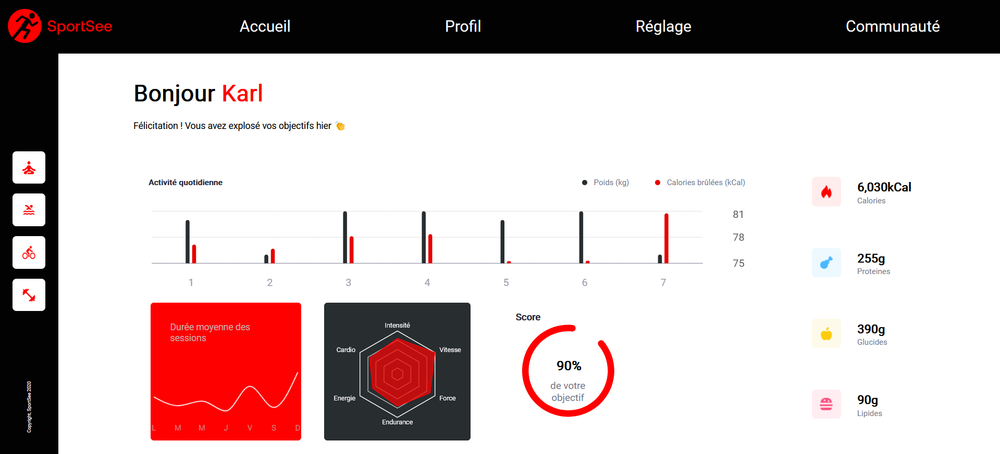

SportSee's dashboard app
SportSee is an app based on React where users can see their fitness progression. The file explains how to install SportSee app and how to execute it. Before installing this app you need to fullfill all the prerequisites incidated below. Detailed explanations are given about frontend's app and backend'app setup. In conclusion, an explanation will allow you to select the data'source, you can choose between mock data or backend API data.
Prerequisites
-
Install npm => https://nodejs.org/en
-
Install yarn => Enter the following command in your computer terminal:
npm install --global yarn
Setup
Download this repository on your computer
-
Enter the following command in your computer terminal:
git clone https://github.com/MilovanovicAlexandre/developpez-un-tableau-de-bord-d-analytics-avec-react
Run Backend's app
-
Enter the following command in your computer terminal to move in the backend's folder:
cd backend
-
Enter the following command in your computer terminal to install the dependencies:
yarn
-
Enter the following command in your computer terminal to run the backend API:
yarn dev
The backend API is now available on port 3001.
Run Frontend's app
-
On your computer terminal go to the root of the repository
-
Enter the following command in your computer terminal to install the dependencies:
npm install
-
Enter the following command in your computer terminal to run the Frontend's app:
npm start
The Frontend'app is now available on: http://localhost:3000/Home
Choose data's source: mock data or backend API data
Mocked data are located in /src/Data/dataMock.js
- In the file apiCallsAndMockCalls.js you can define the source data
- Go to this file
- To change the source of the data you need to modify the variable 'dataMocked'
- Switch true or false for the value of the variable 'dataMocked' to select either mock data or API data